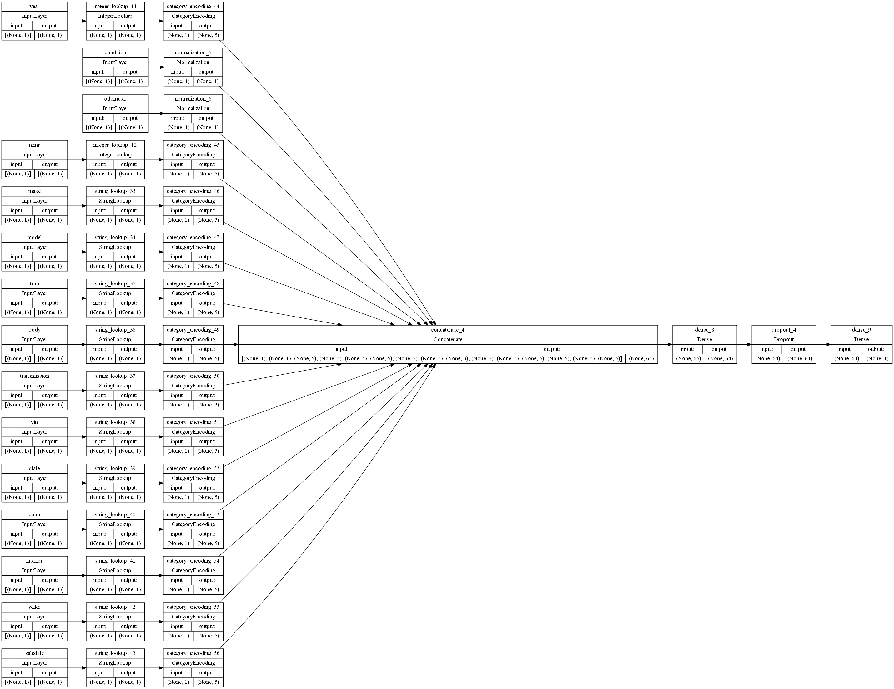

Classifikation
Contents
Classifikation#
import numpy as np
import pandas as pd
from datetime import datetime
import math
# matplotlib und seaborn für Grafiken
import matplotlib.pyplot as plt
import seaborn as sns
# sklearn für Überwachtes Lernen
from sklearn.preprocessing import MinMaxScaler
from sklearn.metrics import mean_squared_error
from sklearn.metrics import max_error
# keras für Neuronale Netze
import keras as keras
from keras.models import Sequential
from keras.layers import Dense, LSTM, Dropout
from keras.utils.vis_utils import plot_model
# Für das Darstellen von Bildern im SVG-Format
import graphviz as gv
import pydot
#from keras.utils import model_to_dot
from IPython.display import SVG
import tensorflow as tf
from tensorflow.keras import layers
tf.__version__
'2.7.1'
carP_df = pd.read_csv( 'car_prices.csv',nrows=400000)
carP_df.head()
| year | make | model | trim | body | transmission | vin | state | condition | odometer | color | interior | seller | mmr | sellingprice | saledate | |
|---|---|---|---|---|---|---|---|---|---|---|---|---|---|---|---|---|
| 0 | 2015 | Kia | Sorento | LX | SUV | automatic | 5xyktca69fg566472 | ca | 5.0 | 16639.0 | white | black | kia motors america, inc | 20500 | 21500 | Tue Dec 16 2014 12:30:00 GMT-0800 (PST) |
| 1 | 2015 | Kia | Sorento | LX | SUV | automatic | 5xyktca69fg561319 | ca | 5.0 | 9393.0 | white | beige | kia motors america, inc | 20800 | 21500 | Tue Dec 16 2014 12:30:00 GMT-0800 (PST) |
| 2 | 2014 | BMW | 3 Series | 328i SULEV | Sedan | automatic | wba3c1c51ek116351 | ca | 4.5 | 1331.0 | gray | black | financial services remarketing (lease) | 31900 | 30000 | Thu Jan 15 2015 04:30:00 GMT-0800 (PST) |
| 3 | 2015 | Volvo | S60 | T5 | Sedan | automatic | yv1612tb4f1310987 | ca | 4.1 | 14282.0 | white | black | volvo na rep/world omni | 27500 | 27750 | Thu Jan 29 2015 04:30:00 GMT-0800 (PST) |
| 4 | 2014 | BMW | 6 Series Gran Coupe | 650i | Sedan | automatic | wba6b2c57ed129731 | ca | 4.3 | 2641.0 | gray | black | financial services remarketing (lease) | 66000 | 67000 | Thu Dec 18 2014 12:30:00 GMT-0800 (PST) |
carP_df.info()
<class 'pandas.core.frame.DataFrame'>
RangeIndex: 400000 entries, 0 to 399999
Data columns (total 16 columns):
# Column Non-Null Count Dtype
--- ------ -------------- -----
0 year 400000 non-null int64
1 make 392910 non-null object
2 model 392844 non-null object
3 trim 392581 non-null object
4 body 390037 non-null object
5 transmission 355878 non-null object
6 vin 400000 non-null object
7 state 400000 non-null object
8 condition 388207 non-null float64
9 odometer 399914 non-null float64
10 color 399447 non-null object
11 interior 399447 non-null object
12 seller 400000 non-null object
13 mmr 400000 non-null int64
14 sellingprice 400000 non-null int64
15 saledate 400000 non-null object
dtypes: float64(2), int64(3), object(11)
memory usage: 48.8+ MB
#Fehlende Werte erkennen. Gibt ein boolesches Objekt zurück, das angibt, ob die Werte NA sind
carP_df.isna().sum().sort_values(ascending=False)
transmission 44122
condition 11793
body 9963
trim 7419
model 7156
make 7090
color 553
interior 553
odometer 86
year 0
vin 0
state 0
seller 0
mmr 0
sellingprice 0
saledate 0
dtype: int64
#Ab diesen Abschnitt werden die fehlenden Werte je nach Datentyp der Spalte.
# \ Kategorische Spalten -> Modus \ Kontinuierliche Spalten -> Mittelwert/Median \ Diskrete Spalten -> Modus
categorical_columns = []
continous_columns = []
discrete_columns = []
for x in carP_df.columns:
if carP_df[x].dtypes == 'O':
categorical_columns.append(x)
else:
if carP_df[x].nunique()>20:
continous_columns.append(x)
else:
discrete_columns.append(x)
categorical_columns
['make',
'model',
'trim',
'body',
'transmission',
'vin',
'state',
'color',
'interior',
'seller',
'saledate']
#Füllen fehlender Werte kategorischer Spalten mit Modus
for x in categorical_columns:
carP_df[x].fillna(carP_df[x].mode()[0],inplace=True)
y_label = 'sellingprice'
# Make a dictionary with int64 featureumns as keys and np.int32 as values
int_32 = dict.fromkeys(carP_df.select_dtypes(np.int64).columns, np.int32)
# Change all columns from dictionary
carP_df = carP_df.astype(int_32)
# Make a dictionary with float64 columns as keys and np.float32 as values
float_32 = dict.fromkeys(carP_df.select_dtypes(np.float64).columns, np.float32)
carP_df = carP_df.astype(float_32)
int_32
{'year': numpy.int32, 'mmr': numpy.int32, 'sellingprice': numpy.int32}
# In String umwandeln
# Eine Liste aller kategorischen Variablen erstellen
cat_convert = ['make', 'model', 'trim', 'body', 'transmission', 'vin', 'state', 'color', 'interior', 'seller', 'saledate']
# convert variables
for i in cat_convert:
carP_df[i] = carP_df[i].astype("string")
# In kategorische Variablen umwandeln
# Eine Liste aller kategorischen Variablen erstellen
cat_convert = ['year', 'mmr']
# convert variables
for i in cat_convert:
carP_df[i] = carP_df[i].astype("category")
carP_df.info()
<class 'pandas.core.frame.DataFrame'>
RangeIndex: 400000 entries, 0 to 399999
Data columns (total 16 columns):
# Column Non-Null Count Dtype
--- ------ -------------- -----
0 year 400000 non-null category
1 make 400000 non-null string
2 model 400000 non-null string
3 trim 400000 non-null string
4 body 400000 non-null string
5 transmission 400000 non-null string
6 vin 400000 non-null string
7 state 400000 non-null string
8 condition 388207 non-null float32
9 odometer 399914 non-null float32
10 color 400000 non-null string
11 interior 400000 non-null string
12 seller 400000 non-null string
13 mmr 400000 non-null category
14 sellingprice 400000 non-null int32
15 saledate 400000 non-null string
dtypes: category(2), float32(2), int32(1), string(11)
memory usage: 39.3 MB
# Liste aller numerischen Daten erstellen (außer Bezeichnung)
list_num = carP_df.drop(columns=[y_label]).select_dtypes(include=[np.number]).columns.tolist()
# Erstellen Sie eine Liste aller kategorialen Daten, die als Ganzzahlen gespeichert sind (außer Label).
list_cat_int = carP_df.drop(columns=[y_label]).select_dtypes(include=['category']).columns.tolist()
# Liste aller kategorischen Daten erstellen, die als String gespeichert sind (außer Label)
list_cat_string = carP_df .drop(columns=[y_label]).select_dtypes(include=['string']).columns.tolist()
Data splitting#
# Validierungsdaten erstellen
df_val = carP_df.sample(frac=0.2, random_state=1337)
# Trainingsdaten erstellen
df_train = carP_df.drop(df_val.index)
print(
"Using %d samples for training and %d for validation"
% (len(df_train), len(df_val))
)
Using 320000 samples for training and 80000 for validation
Transform to Tensors#
# Define a function to create our tensors
def dataframe_to_dataset(dataframe, shuffle=True, batch_size=32):
df = dataframe.copy()
labels = df.pop(y_label)
ds = tf.data.Dataset.from_tensor_slices((dict(df), labels))
if shuffle:
ds = ds.shuffle(buffer_size=len(dataframe))
ds = ds.batch(batch_size)
df = ds.prefetch(batch_size)
return ds
batch_size = 32
ds_train = dataframe_to_dataset(df_train, shuffle=True, batch_size=batch_size)
ds_val = dataframe_to_dataset(df_val, shuffle=True, batch_size=batch_size)
#Feature preprocessing
# Define numerical preprocessing function
def get_normalization_layer(name, dataset):
# Create a Normalization layer for our feature
normalizer = layers.Normalization(axis=None)
# Prepare a dataset that only yields our feature
feature_ds = dataset.map(lambda x, y: x[name])
# Learn the statistics of the data
normalizer.adapt(feature_ds)
# Normalize the input feature
return normalizer
Categorical preprocessing functions¶#
def get_category_encoding_layer(name, dataset, dtype, max_tokens=None):
# Create a layer that turns strings into integer indices.
if dtype == 'string':
index = layers.StringLookup(max_tokens=max_tokens)
# Otherwise, create a layer that turns integer values into integer indices.
else:
index = layers.IntegerLookup(max_tokens=max_tokens)
# Prepare a `tf.data.Dataset` that only yields the feature.
feature_ds = dataset.map(lambda x, y: x[name])
# Learn the set of possible values and assign them a fixed integer index.
index.adapt(feature_ds)
# Encode the integer indices.
encoder = layers.CategoryEncoding(num_tokens=index.vocabulary_size())
# Apply multi-hot encoding to the indices. The lambda function captures the
# layer, so you can use them, or include them in the Keras Functional model later.
return lambda feature: encoder(index(feature))
def get_category_encoding_layer(name, dataset, dtype, max_tokens=None):
# Create a layer that turns strings into integer indices.
if dtype == 'string':
index = layers.StringLookup(max_tokens=max_tokens)
# Otherwise, create a layer that turns integer values into integer indices.
else:
index = layers.IntegerLookup(max_tokens=max_tokens)
# Prepare a `tf.data.Dataset` that only yields the feature.
feature_ds = dataset.map(lambda x, y: x[name])
# Learn the set of possible values and assign them a fixed integer index.
index.adapt(feature_ds)
# Encode the integer indices.
encoder = layers.CategoryEncoding(num_tokens=index.vocabulary_size())
# Apply multi-hot encoding to the indices. The lambda function captures the
# layer, so you can use them, or include them in the Keras Functional model later.
return lambda feature: encoder(index(feature))
all_inputs = []
encoded_features = []
# Numerical features
for feature in list_num:
numeric_feature = tf.keras.Input(shape=(1,), name=feature)
normalization_layer = get_normalization_layer(feature, ds_train)
encoded_numeric_feature = normalization_layer(numeric_feature)
all_inputs.append(numeric_feature)
encoded_features.append(encoded_numeric_feature)
Categorical preprocessing¶#
for feature in list_cat_int:
categorical_feature = tf.keras.Input(shape=(1,), name=feature, dtype='int32')
encoding_layer = get_category_encoding_layer(name=feature,
dataset=ds_train,
dtype='int32',
max_tokens=5)
encoded_categorical_feature = encoding_layer(categorical_feature)
all_inputs.append(categorical_feature)
encoded_features.append(encoded_categorical_feature)
for feature in list_cat_string:
categorical_feature = tf.keras.Input(shape=(1,), name=feature, dtype='string')
encoding_layer = get_category_encoding_layer(name=feature,
dataset=ds_train,
dtype='string',
max_tokens=5)
encoded_categorical_feature = encoding_layer(categorical_feature)
all_inputs.append(categorical_feature)
encoded_features.append(encoded_categorical_feature)
# Input
all_features = layers.concatenate(encoded_features)
# First layer
x = layers.Dense(64, activation="relu")(all_features)
# Dropout to prevent overvitting
x = layers.Dropout(0.8)(x)
# Output layer
output = layers.Dense(1, activation="sigmoid")(x)
# Group all layers
model = tf.keras.Model(all_inputs, output)
Model.compile konfiguriert das Modell für das Training:#
Optimierer: Der Mechanismus, durch den sich das Modell auf der Grundlage der Trainingsdaten selbst aktualisiert, um seine Leistung zu verbessern. Eine gängige Option für den Optimierer ist Adam, eine stochastische Gradientenabstiegsmethode, die auf der adaptiven Schätzung von Momenten erster und zweiter Ordnung beruht.
Verlust: Die Art und Weise, wie das Modell seine Leistung anhand der Trainingsdaten messen kann und wie es sich somit selbst in die richtige Richtung lenken kann. Das bedeutet, dass der Zweck von Verlustfunktionen darin besteht, die Größe zu berechnen, die ein Modell während des Trainings zu minimieren versuchen sollte.
Metriken: Eine Metrik ist eine Funktion, die verwendet wird, um die Leistung Ihres Modells während des Trainings und der Tests zu beurteilen. Hier geht es nur um die Genauigkeit.
model.compile(optimizer="adam",
loss ="binary_crossentropy",
metrics=["accuracy"])
# `rankdir='LR'` is to make the graph horizontal.
tf.keras.utils.plot_model(model, show_shapes=True, rankdir="LR")

model.fit(ds_train, epochs=10, validation_data=ds_val)
Epoch 1/10
10000/10000 [==============================] - 102s 9ms/step - loss: nan - accuracy: 0.0000e+00 - val_loss: nan - val_accuracy: 0.0000e+00
Epoch 2/10
10000/10000 [==============================] - 77s 7ms/step - loss: nan - accuracy: 0.0000e+00 - val_loss: nan - val_accuracy: 0.0000e+00
Epoch 3/10
10000/10000 [==============================] - 65s 6ms/step - loss: nan - accuracy: 0.0000e+00 - val_loss: nan - val_accuracy: 0.0000e+00
Epoch 4/10
10000/10000 [==============================] - 99s 9ms/step - loss: nan - accuracy: 0.0000e+00 - val_loss: nan - val_accuracy: 0.0000e+00
Epoch 5/10
10000/10000 [==============================] - 85s 8ms/step - loss: nan - accuracy: 0.0000e+00 - val_loss: nan - val_accuracy: 0.0000e+00
Epoch 6/10
10000/10000 [==============================] - 97s 9ms/step - loss: nan - accuracy: 0.0000e+00 - val_loss: nan - val_accuracy: 0.0000e+00
Epoch 7/10
10000/10000 [==============================] - 93s 9ms/step - loss: nan - accuracy: 0.0000e+00 - val_loss: nan - val_accuracy: 0.0000e+00
Epoch 8/10
10000/10000 [==============================] - 86s 8ms/step - loss: nan - accuracy: 0.0000e+00 - val_loss: nan - val_accuracy: 0.0000e+00
Epoch 9/10
10000/10000 [==============================] - 89s 8ms/step - loss: nan - accuracy: 0.0000e+00 - val_loss: nan - val_accuracy: 0.0000e+00
Epoch 10/10
10000/10000 [==============================] - 87s 8ms/step - loss: nan - accuracy: 0.0000e+00 - val_loss: nan - val_accuracy: 0.0000e+00
<keras.callbacks.History at 0x1f96327c910>
loss, accuracy = model.evaluate(ds_val)
print("Accuracy", round(accuracy, 2))
2500/2500 [==============================] - 13s 5ms/step - loss: nan - accuracy: 0.0000e+00
Accuracy 0.0